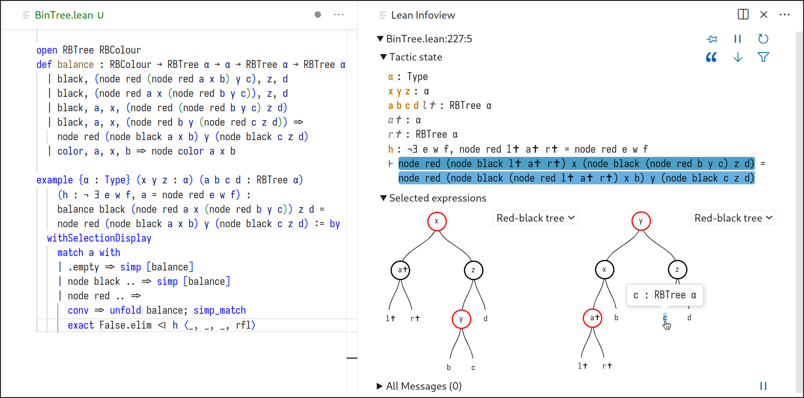

ProofWidgets#
ProofWidgets is a library of user interface components for Lean 4. It supports:
symbolic visualizations of mathematical objects and data structures
data visualization
interfaces for tactics and tactic modes
alternative and domain-specific goal state displays
user interfaces for entering expressions and editing proofs
Authors: Wojciech Nawrocki, E.W.Ayers with contributions from Tomáš Skřivan
How does ProofWidgets relate to user widgets?#
ProofWidgets relies on the user widgets mechanism built into Lean. User widgets provide the minimum of functionality needed to enable custom user interfaces. ProofWidgets builds on top of this with a higher-level component library, syntax sugar, and user-friendly abstractions. Stable parts of ProofWidgets may eventually be backported into Lean core, but ProofWidgets overall will remain a separate library for the foreseeable future.
Usage#
Viewing the demos#
The easiest way to get started is to clone a release tag of ProofWidgets and run
lake build :release, as follows:
# You should replace v0.0.3 with the latest version published under Releases
git clone https://github.com/leanprover-community/ProofWidgets4 --branch v0.0.3
cd ProofWidgets4/
lake build :release
After doing this you will hopefully be able to view the demos in ProofWidgets/Demos/. Top tip: use
the pushpin icon ( )
to keep a widget in view. You can then live code your widgets.
)
to keep a widget in view. You can then live code your widgets.
Using ProofWidgets as a dependency#
Put this in your lakefile.lean, making sure to reference a release tag
rather than the main branch:
-- You should replace v0.0.3 with the latest version published under Releases
require proofwidgets from git "https://github.com/leanprover-community/ProofWidgets4"@"v0.0.3"
Developing ProofWidgets involves building TypeScript code with NPM.
When depending on ProofWidgets but not writing any custom TypeScript yourself,
you likely want to spare yourself and your users from having to install and run NPM.
ProofWidgets is configured to use Lake’s cloud releases feature
which will automatically fetch pre-built JavaScript files as long as you require a release tag
rather than the main branch.
In this mode, you and your users should not need to have NPM installed.
However, fetching cloud release may sometimes fail,
in which case ProofWidgets may still revert to a full build.
You can force ProofWidgets to fail with a custom error in this case by importing it like so:
-- You should replace v0.0.3 with the latest version published under Releases
require proofwidgets with NameMap.empty.insert `errorOnBuild "<my message>" from git "https://github.com/leanprover-community/ProofWidgets4"@"v0.0.3"
⚠️ [EXPERIMENTAL] To use ProofWidgets4 JS components in widgets defined in other Lean packages, you can import @leanprover-community/proofwidgets4 from NPM.
Features#

JSX-like syntax#
import ProofWidgets.Component.HtmlDisplay
open scoped ProofWidgets.Jsx
-- click on the line below to see it in your infoview!
#html <b>You can use HTML in Lean {.text s!"{1 + 3}"}!</b>
See the Jsx.lean and ExprPresentation.lean demos.
Support for libraries#
We have good support for building diagrams with Penrose, and expose
some Recharts components for plotting functions and other kinds of
data. See the Venn.lean and Plot.lean demos.
For more purpose-specific integrations of libraries see the Rubiks.lean and RbTree.lean demos.
Custom Expr displays#
Just like delaborators and unexpanders allow you to customize how expressions are displayed as text,
ProofWidgets allows “delaborating” into (potentially interactive) HTML. See the
ExprPresentation.lean demo.
Multi-stage interactions#
Proof widgets can be used to create proving loops involving user interactions and running tactics
in the background. See the LazyComputation.lean demo, and the Conv.lean demo for an example of
editing the proof script.
Animated HTML#
As a hidden feature, you can also make animated widgets using the AnimatedHtml component. This
works particularly well with libraries that ease between different plots, for example Recharts.
You can see an example of how to do this in the Plot.lean demo.
Developing ProofWidgets#
Contributions are welcome! Check out issues tagged with “good first issue”.
The package consists of widget user interface modules written in TypeScript (under widget/),
and Lean modules (under ProofWidgets/).
To build ProofWidgets from source,
you must have NPM (the Node.js package manager) installed.
During a build, we first compile the TypeScript widget code using NPM,
and afterwards build all Lean modules.
Lean modules may use TypeScript compilation outputs.
The Lakefile handles all of this, so executing lake build should suffice to build the entire package.
In order to build only the TypeScript, run lake build widgetJsAll.
Widgets can also be built in development mode using lake build widgetJsAllDev.
This makes them easier to inspect in developer tools.
💡 The NPM part of the build process may sometimes fail with missing packages.
If this happens, run npm clean-install in the widget/ directory and then try lake build again.
We use the include_str term elaborator
to splice the minified JavaScript
produced during the first part of the build (by tsc and Rollup)
into ProofWidgets Lean modules.
The minifed JS is stored in .lake/build/js/.
Modifying any TypeScript source will trigger a rebuild,
and should correctly propagate the new minified code
to where it used in Lean.
⚠️ Note however that due to Lake issue #86, all the widget sources are rebuilt whenever any single one changes, which might take a while.
Cite#
We have written a paper describing the design of ProofWidgets4.
If this work helps you in your own research, you can cite it as follows:
@InProceedings{nawrocki_et_al:LIPIcs.ITP.2023.24,
author = {Nawrocki, Wojciech and Ayers, Edward W. and Ebner, Gabriel},
title = {{An Extensible User Interface for Lean 4}},
booktitle = {14th International Conference on Interactive Theorem Proving (ITP 2023)},
pages = {24:1--24:20},
series = {Leibniz International Proceedings in Informatics (LIPIcs)},
ISBN = {978-3-95977-284-6},
ISSN = {1868-8969},
year = {2023},
volume = {268},
editor = {Naumowicz, Adam and Thiemann, Ren\'{e}},
publisher = {Schloss Dagstuhl -- Leibniz-Zentrum f{\"u}r Informatik},
address = {Dagstuhl, Germany},
URL = {https://drops.dagstuhl.de/opus/volltexte/2023/18399},
URN = {urn:nbn:de:0030-drops-183991},
doi = {10.4230/LIPIcs.ITP.2023.24},
annote = {Keywords: user interfaces, human-computer interaction, Lean}
}